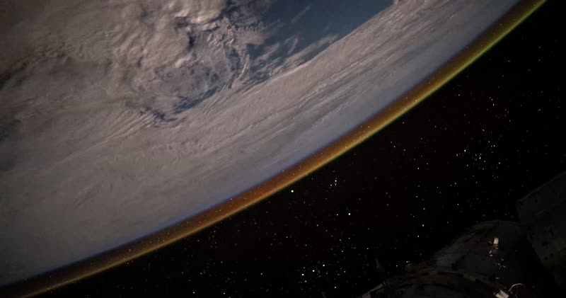

OBSERVATORIO SOLAR · LATITUD / FECHA
Maqueta solar: azimut y elevación
Traza la posición del Sol a lo largo del día, desde cualquier latitud.
Todas las horas son solares, no las del reloj. A las 12:00 solares el Sol alcanza su punto más alto.
La declinación es un único valor para todo el día; lo que cambia cada hora es la elevación y el azimut.
La declinación indica cuánto se inclina el Sol hacia el norte o el sur durante el año. La elevación es la altura del Sol sobre el horizonte. El azimut indica la dirección en la que está el Sol, medida desde el norte.
TRAYECTORIA DIARIA
Recorrido solar
En este proyecto investigarás cómo cambia la posición del Sol según el lugar y la fecha. Elige una latitud y un día, y explora el dibujo y la tabla para descubrir por dónde sale el Sol, qué altura alcanza y cuánto dura el día. Después, usa esos datos para construir una maqueta de su recorrido en el cielo.